디지털 상품의 한 가지 규칙
디지털 상품은 한 번 만들어 두면 다시 만들지 않고 계속 팔 수 있는 상품이에요. 스프레드시트, 작은 앱, 안내서, 멤버십, 강의 같은 것들이죠. 손에 쥐는 물건이 아니라서 창고도, 배송도, 재고도 없어요. 하나를 팔아 두고 다음 것을 만들러 갈 수 있어요.
발표자는 수천 개의 디지털 상품 사업을 살펴봤고 자기도 하나를 운영하고 있다고 해요. 아이디어는 많은데 손이 모자라서, 직접 못 만드는 35가지를 풀어놓는 영상이에요. 아이디어마다 '왜 팔리는지'를 같이 설명하는 게 이 영상의 핵심이에요. 이유를 알면 남을 따라 하지 않고 스스로 기회를 찾을 수 있다는 거예요.
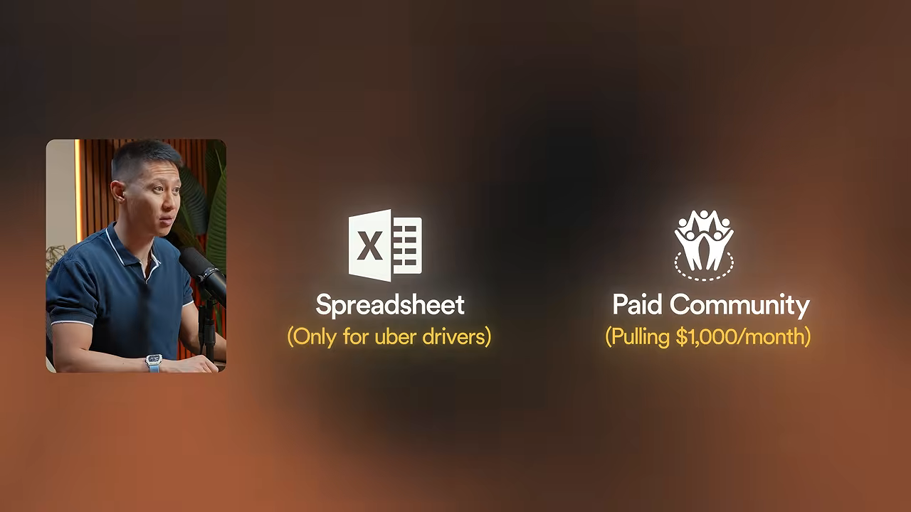
35가지 밑에 깔린 규칙 하나
발표자가 영상 내내 되풀이하는 규칙은 하나예요. 똑같은 아이디어도 엉뚱한 사람에게 내밀면 가치가 없고, 맞는 사람에게 내밀면 진짜 사업이 돼요. 그래서 아래 아이디어들은 대부분 '한 직업, 한 업종, 한 상황'으로 범위를 좁히는 방향으로 흘러가요.
It's not the product that makes money. It's who you make it for and how you package it.
돈을 버는 건 상품이 아니에요. 누구를 위해 만들고 어떻게 포장하느냐예요.
— 영상 01:38
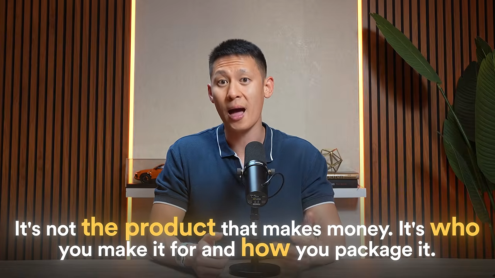
아이디어는 이번 주말에 바로 만들 수 있는 쉬운 것부터 시작해서, 마지막의 큰 것까지 여섯 묶음으로 올라가요.
| 묶음 | 번호 | 돈을 버는 방식 |
|---|---|---|
| 템플릿 | 1~8 | 한 번 팔아요 |
| 작은 소프트웨어 | 9~15 | 한 번 또는 매달 받아요 |
| AI 상품 | 16~21 | 한 번 팔고, 구독과 맞춤 서비스를 붙여요 |
| 가르치는 상품 | 22~27 | 한 번 팔아요 |
| 커뮤니티 | 28~33 | 매달 받아요 |
| 고가 프로그램 | 34~35 | 큰 금액을 한 번에 받아요 |
템플릿: 좁힐수록 비싸져요
템플릿이라고 하면 다들 노션 템플릿부터 떠올려요. 틀린 생각은 아니지만 이미 만 명쯤이 그 자리에 있다고 해요. 발표자는 템플릿에서 돈이 되는 건 형식이 아니라 구체성이라고 말해요.
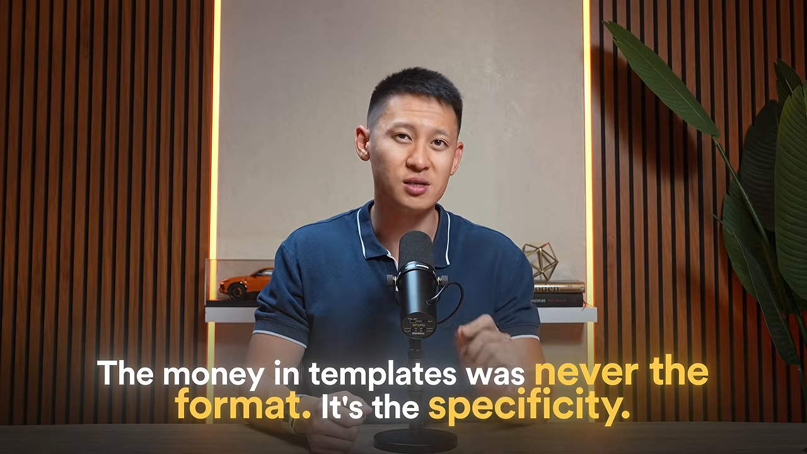
사는 사람이 지키는 돈이 값을 정해요
첫 번째 아이디어는 무섭고 비싼 결정을 돕는 계산기예요. 가계부는 40달러쯤을 아껴 주니까 10달러에 팔려요. 임대 부동산 분석기는 20만 달러짜리 결정을 지켜 주니까 99달러를 받을 수 있어요. 만드는 수고는 거의 같아요. 발표자는 이런 전문 스프레드시트가 79달러에서 200달러 가까이에 팔리고, 흔한 플래너는 10달러를 두고 다툰다고 말해요. 결국 실수했을 때 손해가 큰 구매자를 고르는 게 이 게임의 전부라는 거예요.
이름만 바꿔도 경쟁자가 사라져요
두 번째는 흔한 템플릿의 직업별 버전이에요. 지출 관리표를 하나만 만들고, '우버 기사용', '엣시 판매자용', '에어비앤비 호스트용'으로 나눠 팔아요. 뼈대는 같고 이름표를 바꾸고 그 직업에 필요한 항목 서너 개만 더해요. 자기 직업을 검색했는데 상품 이름에 그 직업이 그대로 적혀 있으면, 나를 위해 만든 것처럼 느껴져요. 5,000개의 일반 관리표와 싸우는 대신 그 직업을 콕 집은 유일한 상품이 되는 거예요.
세 번째는 스와이프 파일을 빈칸 채우기형으로 바꾸는 거예요. 잘 된 이메일 50개 모음은 읽고 나면 똑똑해진 기분만 들고 끝나요. 자기 사업에 맞게 옮기는 일이 여전히 남아 있거든요. 이름, 제안, 마감일을 전부 괄호로 비워 두면 커피 한 잔 마시며 완성하는 양식이 돼요. 파는 건 문장이 아니라 '빈 페이지 앞에서 막히는 것'을 없애 주는 거예요.
네 번째는 한 업종용 브랜드 키트예요. 로고 템플릿만으로는 아무도 관심이 없어요. 새로 문을 연 양초 가게가 초보처럼 보이지 않게 로고, 색, 글꼴, 첫 인스타그램 게시물 10개를 한 번에 주면 이야기가 달라져요. 기술 스타트업용은 굵고 단순하게, 공방용은 따뜻하고 손맛 나게 한 업종을 깊게 파요. 그러면 '첫날부터 자리 잡은 가게처럼 보이기'라는 변화에 값을 매길 수 있어요.
번들은 상품이 아니라 지렛대예요
다섯 번째는 이미 가진 상품을 묶는 번들이에요. 송장 템플릿, 지출 관리표, 손익 계산표를 따로 팔면 하나에 29달러이고 사람들은 하나만 사요. 셋을 '소상공인 재무 완성 키트'로 묶으면 99달러가 되고, 오히려 싸게 산 것처럼 느껴져요. 새로 만든 건 없고 포장만 바꿨는데 가격이 세 배가 됐어요. 발표자는 많은 사람이 상품을 더 만들 때가 아니라 묶어야 할 때라고 말해요.
| 번호 | 아이디어 | 좁히는 방향 |
|---|---|---|
| 1 | 비싼 결정을 돕는 계산기 | 실수하면 손해가 큰 결정 |
| 2 | 흔한 템플릿의 직업별 버전 | 한 직업 |
| 3 | 빈칸 채우기형 스와이프 파일 | 바로 쓰게 만드는 형식 |
| 4 | 한 업종용 브랜드 키트 | 한 업종 |
| 5 | 번들 | 기존 상품을 묶는 포장 |
| 6 | 한 분야 전용 이력서 템플릿 | 간호사와 개발자는 이력서가 달라요 |
| 7 | 한 직업용 랜딩 페이지 템플릿 | 빈 캔버스가 아니라 코칭 사이트처럼 한 직업 |
| 8 | 다른 판매자에게 파는 목업 묶음 | 금광의 광부에게 삽을 파는 쪽 |
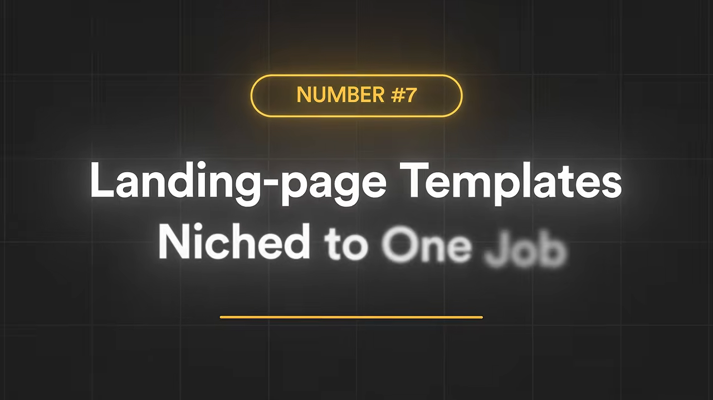
작은 소프트웨어: 귀찮은 일 하나를 없애는 도구
발표자가 가장 기대하는 묶음이에요. 예전에는 작은 소프트웨어 하나를 만들려면 개발자를 고용하거나 1년 동안 코딩을 배워야 했어요. 지금은 원하는 도구를 평범한 말로 설명하면 주말 안에 작동하는 버전을 얻을 수 있다고 해요. 그래서 목록에서 이익률이 가장 높은데도 발표자 주변에서 거의 아무도 안 만드는 상품이라고 봐요.
지겨운 한 시간을 지워 주는 도구
아홉 번째는 버튼 하나로 귀찮은 일 하나를 없애는 도구예요. 소프트웨어라고 하면 기능 백 개짜리 거대한 플랫폼을 떠올리지만, 조용히 돈을 버는 도구는 딱 한 가지 일만 해요. 스프레드시트의 배송 추적 번호를 쇼핑몰에 바로 넣어 주는 도구 하나로 매달 돈을 버는 사람이 있다고 해요. 누군가의 일주일에서 지긋지긋한 한 시간을 지워 주기 때문이에요. 일이 좁을수록 큰 회사는 너무 작다고 무시하고, 그 빈틈이 내 몫이 돼요.
실제로 돈을 잃고 있는 업종을 노려요
열 번째가 발표자가 가장 권하는 방향이에요. 지금 소프트웨어를 만드는 사람들은 대부분 팟캐스터, 유튜버 같은 다른 크리에이터를 위한 도구만 만들어요. 그 사이 한 배관공은 전화 몇 통을 놓쳐서 일주일에 500달러를 잃었다고 말했어요.
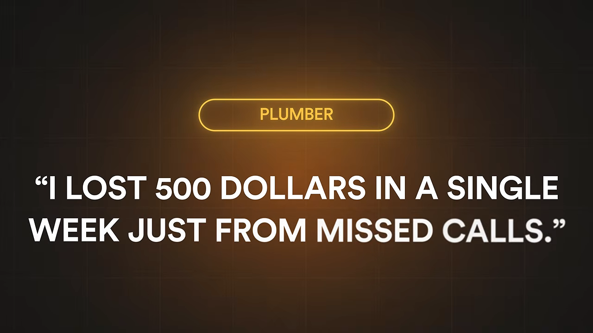
오전 10시에 개 두 마리를 겹쳐 예약한 반려견 미용사, 코르크판의 메모지로 직원을 배치하는 청소 업체도 같은 처지예요. 이들은 돈이 있고, 돈이 새는 문제도 있어요. 화려하지 않아서 아무도 이들을 위해 만들지 않을 뿐이에요. 잘못된 예약이나 잃어버린 청구서처럼 특정한 출혈 하나를 막는 도구를 만들고, 장난감처럼 싸게 받지 말라고 해요. 월 30달러, 50달러, 80달러를 내고 일감을 그만 잃고 싶어 하는 사람들이라는 거예요. 이런 업종용 소프트웨어가 이미 한 분야를 이루고 있다는 것 자체가 돈이 진짜라는 증거라고 말해요.
모두를 위한 도구의 버티컬 버전
열한 번째는 이미 모두가 쓰는 도구를 한 부류 전용으로 다시 만드는 버티컬 전략이에요. 발표자가 예로 드는 건 링크트리예요. 누구에게나 맞는 범용 '프로필 링크' 도구라서, 거꾸로 말하면 누구에게도 꼭 맞지는 않아요. 음악가 전용, 부동산 중개인 전용, 피트니스 코치 전용으로 만들면 핵심 아이디어는 같아도 모든 단어, 기능, 예시가 그 한 사람에게 말을 걸어요.
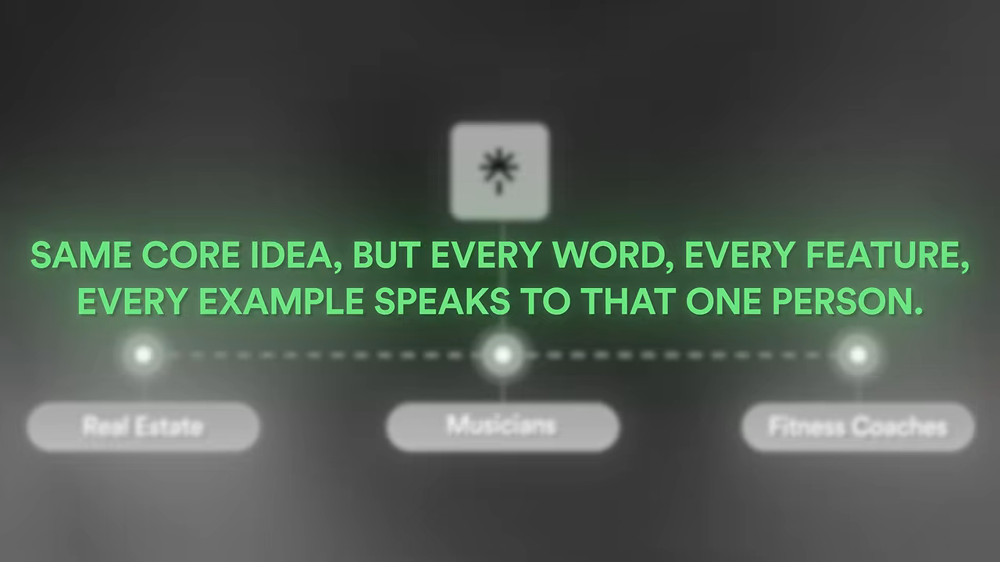
새 분야를 발명할 필요가 없어요. 모두를 위한 소프트웨어는 실패하고, 피트니스 코치를 위한 소프트웨어는 그 사람의 하루를 이해하니까 이겨요. 사람들은 평범하게 서비스받는 것보다 이해받는 데 더 돈을 낸다는 게 발표자의 설명이에요.
만들기 전에 먼저 돈을 받아 봐요
열두 번째는 무엇을 만들든 그 전에 하라는 사전 판매예요. 먼저 돈을 받고, 나중에 만드는 순서예요. 아이디어 하나로 6개월 동안 동굴에 들어가 만들고, 출시했는데 아무도 안 오는 게 가장 흔한 실패라고 해요. 잘하는 사람들은 정반대로 해요. 반려견 산책 도우미에게 더 나은 예약 도구가 필요하다고 생각했다면, 만들지 말고 그 도구를 설명하는 한 페이지짜리 사이트를 만들어요. '지금 구매' 버튼을 달고, 산책 도우미들이 모이는 페이스북 그룹 세 곳에 올린 뒤 지켜봐요.
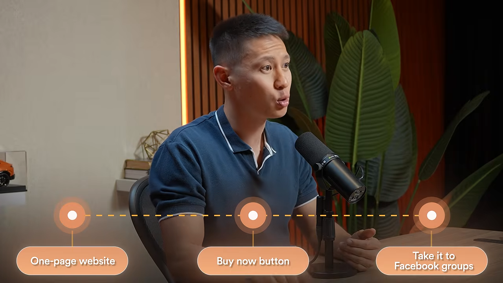
누가 버튼을 눌러 돈을 내려 한다면 사업이 되는 거고, 그때 만들면 돼요. 코드 한 줄 쓰기 전에 평생 이용권 50개를 팔아 2만 달러를 모은 창업자도 있다고 해요. 그 돈은 '이건 있어야 한다'고 손을 든 50명이기도 해요. 발표자의 결론은 먼저 팔고, 나중에 만들라는 거예요.
이 묶음에서 빠르게 지나가는 아이디어는 세 가지예요. 13번은 한 부류의 사람을 위한 출시 대기자 명단 도구, 14번은 후기를 한곳에 모아 보여 주는 '사랑의 벽' 도구예요. 지금은 이걸 도구 세 개를 엮어서 하고 있다고 해요. 15번은 블로그 글 하나를 일주일치 소셜 게시물로 바꿔 주는 도구로, 손으로 하기 싫어하는 특정 크리에이터를 노려요.
AI 상품: 프롬프트가 아니라 능력을 팔기
발표자는 이 묶음을 넣을지 망설였다고 해요. 'AI 프롬프트를 판다'고 하면 2023년식 상품이 떠오르거든요. ChatGPT 프롬프트 1,000개를 PDF로 묶어 5달러에 파는 것 말이에요. 그 버전은 끝났다고 인정해요. 다만 그 밑에서 시장이 조용히 옮겨 갔어요. 프롬프트를 파는 데서, 특정 사람의 특정 일을 대신 해 주는 '능력'을 파는 쪽으로요. 가격도 5달러에서 200달러로 올라갔는데, 이 변화를 따라온 사람이 거의 없다고 말해요.
지시문이 아니라 완성된 기계
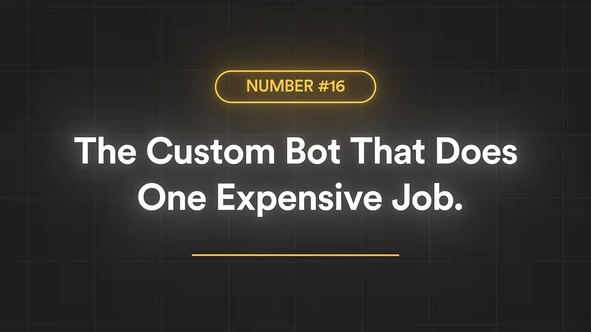
발표자는 둘을 이렇게 나눠요. 프롬프트는 누군가에게 건네주고 잘 쓰길 바라는 지시문이에요. 커스텀 GPT는 지식을 넣고, 다듬고, 시험까지 끝낸 완성된 기계라서 열기만 하면 일을 해요. 들어가는 작업은 비슷해도 프롬프트 문서는 19달러, 제대로 된 지식으로 훈련한 봇은 200달러 이상에 팔린다고 해요. 지시문이 아니라 이미 일을 아는 전문가를 파는 셈이에요. 저녁 메뉴에 맞는 와인 고르기, 소상공인 세금 질문 답하기, 새 집주인에게 헷갈리는 임대 계약 조항 설명하기처럼 좁고 값진 일 하나를 고르라고 해요.
한 단계가 아니라 조립 라인
열일곱 번째는 프롬프트가 아니라 작업 흐름 전체를 파는 거예요. 프롬프트 하나는 한 가지 일만 하지만 실제 일은 늘 사슬처럼 이어져요. 팟캐스터는 녹음한 뒤 그걸 블로그 글로, 소셜 문구 다섯 개로, 구독자 이메일로 바꿔야 해요. 일이 네 개예요. 대본을 붙여 넣으면 시스템이 단계를 하나씩 밟아 네 가지 결과물을 다 돌려주는 조립 라인을 팔아요. 여기에 예시 입력과 결과를 함께 넣으면, 사기 전에 이미 작동하는 걸 보게 돼요. 사람들은 확신에 돈을 낸다는 거예요.
한 업종용 AI 도구 모음
열여덟 번째는 한 업종만을 위한 AI 도구 모음이에요. 모두에게 AI 프롬프트를 파는 건 아무에게도 안 파는 것과 같아요. 부동산 중개인이 매주 하는 일, 즉 매물 소개글, 구매자 후속 이메일, 협상 대본을 묶으면 사는 사람이 분명하고 그 사람은 '내 얘기'라고 느껴요.
여기서 한 단계 더 나가요. 도구 모음으로 한 번 들어오게 하고, 작업 흐름에는 매달 새 입력이 필요하니 작은 구독으로 계속 갱신해 줘요. 자기 사무실에 맞게 고치고 싶은 사람에게는 맞춤 서비스를 제대로 된 값에 팔아요. 도구 모음 하나로 고객 단계가 셋이 되는 거예요. 다만 한 업종을 골라 그 일을 정말 이해한다고 믿을 만큼 깊게 들어갔을 때만 통한다고 덧붙여요.
빠르게 지나가는 세 가지도 있어요. 19번은 자기 계정에 붙여 넣기만 하면 바로 전문가가 생기는 봇 설정, 20번은 매달 바뀌는 분야의 프롬프트 구독으로 한 부분을 무료로 미끼 삼아요. 21번은 '반(反) 메가팩'이에요. 프롬프트 1,000개 대신 한 가지 좁은 문제만 푸는 작고 검증된 묶음을 결과 예시와 함께 팔아요. 집중이 늘 1,000개를 이긴다는 거예요.
가르치는 상품: 큰 강의보다 작은 결과
이제 도구에서 '가르치기'로 넘어가요. 발표자는 이 묶음에 목록 전체에서 가장 비싼 실수가 숨어 있다고 말해요. '아는 걸 팔자'고 하면 다들 바로 강의를 만들러 가요. 넉 달 동안 40시간짜리 영상을 찍고, 아무도 끝까지 안 보고, 망해요.
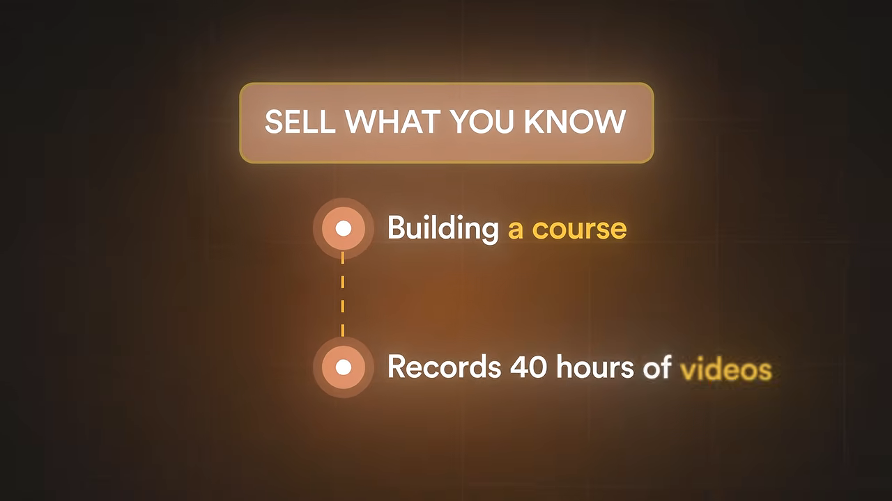
지금 팔리는 건 크고 빠짐없는 강의가 아니라 특정 결과 하나를 빨리 얻게 해 주는 작은 상품이라고 해요. 작게 만드는 건 타협이 아니라 전략이라는 거예요.
첫 번째 벽을 넘게 해 주기
스물두 번째는 콜드 스타트를 풀어 주는 상품이에요. 새로 시작한 에어비앤비 호스트에게 다들 '좋은 후기를 받으라'고 말해요. 하지만 진짜 문제는 후기가 0개라서 손님이 믿을 이유가 없다는 거예요. 여섯 번째 후기를 받으려면 첫 후기가 있어야 하고, 첫 후기가 가장 어려워요.
그래서 후기 0개에서 5개까지 가게 해 주는 30분짜리 상품을 47달러에 팔아요. 체크인 한 시간 뒤에 보낼 메시지, 도착 전에 하는 작은 배려, 후기를 쉽게 남기게 만드는 한 줄 같은 게 들어가요. 너무 작아서 팔릴까 싶지만, 그 호스트가 원하는 예약, 수입, 다음 후기가 전부 그 벽 너머에 있어요. 그러니 기꺼이 47달러를 낸다는 거예요. 고객 사례가 없어 첫 고객을 못 받는 프리랜서, 후기가 없는 작가처럼 콜드 스타트가 있는 곳이면 어디든 같은 방법이 통해요.
좁은 한 사람을 위한 플레이북
스물세 번째는 좁은 한 직업의 내부자 플레이북이에요. 웨딩 사진가에게 '사진 잘 찍는 법'은 이미 넘쳐서 가치가 없어요. 정작 밤잠을 설치게 하는 건 가격이에요.
그래서 '웨딩 가격 플레이북'을 만들어요. 패키지 단계를 어떻게 나눌지, 커플의 기준을 잡으려고 가운데 놓는 금액(앵커링), 깎아 달라고 할 때 할 말이 들어가요. 사진 기술이 아니라 틀릴까 두려운 사업 결정을 파는 거예요. 발표자는 '사진 사업 시작하기' 같은 일반 전자책은 몇 달러에 팔리다 사라지지만, 가격 플레이북은 열 배를 받는다고 말해요. 제목을 보자마자 '이건 딱 내 문제'라고 느끼기 때문이에요. 프리랜서 개발자용 가격 플레이북, 1인 에이전시의 첫 채용 플레이북, 개인 상담소를 여는 상담사를 위한 보험사 응대 플레이북처럼 다른 분야에도 그대로 옮길 수 있어요.
정보가 필요한가요, 도구가 필요한가요
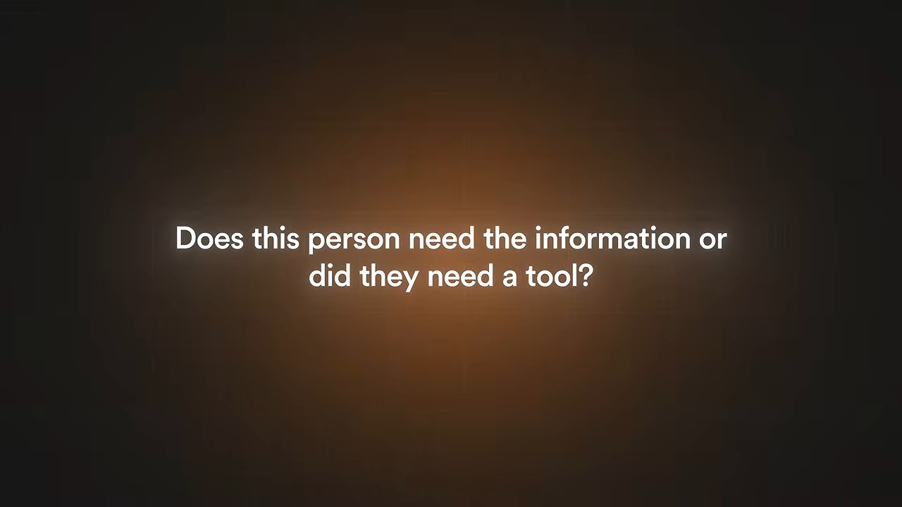
스물네 번째는 수업이 아니라 도구를 팔라는 거예요. 대부분은 습관처럼 정보를 팔아요. 그런데 사는 사람은 그냥 일이 끝나기를 바랄 때가 많아요. 고객과 어려운 대화를 하는 법을 담은 영상이 정보라면, 줌 통화 중에 화면에 띄워 그대로 읽는 대본이 도구예요. 사는 사람은 전문가가 되고 싶은 게 아니라 숙제 없이 결과를 얻고 싶어 해요. 시간을 돌려주는 지름길에 늘 더 돈을 낸다는 거예요. 협상이든 식단이든 이력서든, 가르치려는 게 있다면 완성된 대본, 계획, 빈칸 양식을 바로 건넬 수 있는지 먼저 물어보라고 해요.
빠르게 지나가는 세 가지는 이래요. 25번은 무료 미니 수업으로 첫 성과를 맛보게 한 뒤 유료로 잇는 방식이에요. 26번은 '부동산 중개인을 위한 AI'처럼 한 직업용 짧은 강의예요. 사람들은 AI 전반이 아니라 자기 일에 쓸 AI를 원해요. 27번은 출시, 첫 직원 채용, 첫 세금 신고처럼 한 번뿐이고 틀리면 무서운 순간을 위한 체크리스트예요.
커뮤니티: 매달 돈이 들어오는 구조
지금까지는 한 번 팔고 끝나는 상품이었어요. 발표자는 디지털 상품으로 조금 버는 사람과 안정적으로 버는 사람의 가장 큰 차이가 돈이 한 번 들어오느냐, 매달 들어오느냐라고 말해요. 그리고 사람들을 매달 돈 내게 만드는 건 더 많은 콘텐츠가 아니라고 강조해요.
막혔을 때 물어볼 곳
스물여덟 번째는 '지원 공백'을 메우는 커뮤니티예요. 강의를 산 사람은 들떠서 시작했다가 3강쯤에서 막혀요. 질문이 생겼는데 강의를 판 사람은 이미 떠나고 없어요. 물어볼 사람 없이 막힌 그 순간이 기회 전체라는 거예요.
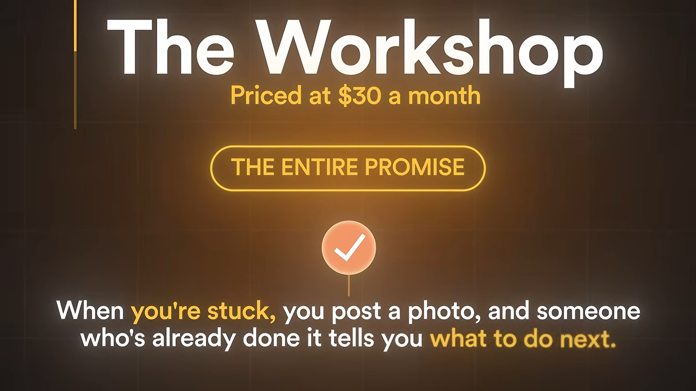
많은 사람이 멤버십의 상품을 '더 많은 영상과 수업'으로 착각한다고 해요. 수업은 온라인에서 공짜로도 구할 수 있어요. 구할 수 없는 건 밤 11시에 막혔을 때 내 상황에 맞춰 답해 줄 사람이에요. 사람들은 정보가 아니라 '막힌 데서 빠져나오는 것'에 매달 돈을 내요. 운영자가 세계 최고 전문가일 필요도 없어요. 한 걸음 앞선 사람이 한 걸음 뒤의 사람을 돕는 방을 꾸리면 된다고 해요.
작아 보여도, 빠져 있으면 돼요
스물아홉 번째는 사업이 되기엔 너무 작아 보이는 니치예요. 다들 '그건 너무 작아, 누가 돈을 내?'라는 생각으로 좋은 아이디어를 버려요. 영상 처음에 나온 캘리그래피 사례가 여기서 다시 나와요.
| 커뮤니티 | 회원 수 | 월 회비 | 영상에서 말한 월 매출 |
|---|---|---|---|
| 캘리그래피(손글씨) | 1,200명 | 9달러 | 약 1만 1천 달러 |
| 피클볼 | 1,400명 | 39달러 | 언급 없음 |
| 폐경기 여성의 체중 감량 | 언급 없음 | 37달러 | 언급 없음 |
| 초보 목공 '워크숍'(예시) | 가상의 예 | 30달러 | 가상의 예 |
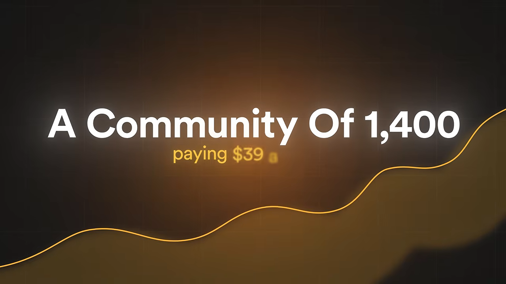
발표자는 열정은 분야가 얼마나 작은지 신경 쓰지 않는다고 말해요. 손글씨나 피클볼, 오래된 신시사이저 복원에 빠진 사람은 같은 마음인 사람들과 한 방에 있으려고 월 10달러쯤은 기꺼이 내요. 매달 돈이 들어오는 사업에서는 사람들이 계속 머무는 게 전부이고, 머물게 하는 건 몰입이에요. 그래서 '이 분야가 충분히 큰가'가 아니라 '충분히 빠져 있나'를 물어야 한다는 거예요.
큰 시장의 가장자리
서른 번째는 절박한데 외면받는 사람들이에요. 다이어트는 지구에서 가장 붐비는 시장이지만 가장자리는 달라요. 폐경기에 체중을 줄이려는 여성만을 위한 월 37달러 커뮤니티가 있다고 해요. 일반 다이어트 시장이 무시하고 심지어 잘못 다루기도 하는 한 집단, 한 시기의 문제예요. 시장의 일반판은 가장 붐비는 곳일 수 있지만 같은 시장의 구체판은 활짝 열려 있을 수 있어요. 이렇게 구체적이고 감정이 실린 집단은 찾아가기 쉽고 더 오래 머문다고 해요.
발표자는 이 묶음에 대해 솔직하게 덧붙여요. 커뮤니티는 손 놓고 굴러가는 사업의 정반대예요. 직접 나서야 해요. 하지만 바로 그래서 남이 따라 하기 어렵고, 잘하면 몇 년이고 돈을 벌어 준다고 해요.
빠르게 지나가는 세 가지는 이래요. 31번은 '이사급 이상만'처럼 들어오는 조건 자체가 가치가 되는 직함별 폐쇄 모임이에요. 32번은 무료 커뮤니티를 먼저 열고 몇 달마다 유료 챌린지로 이어 가는 방식이에요. 33번은 숫자로 잴 수 있는 목표 하나를 두고, 남이 기다리니까 나오게 되는 책임 모임이에요.
꼭대기: 결과를 파는 고가 프로그램
마지막 묶음은 짧지만, 발표자가 지금 처음부터 다시 시작한다면 직접 만들 두 가지예요. 여기서 영상 전체의 그림이 드러나요. 템플릿, 도구, 작은 상품, 커뮤니티는 목적지가 아니라 진입로라는 거예요. 20달러, 40달러짜리로 도움을 받아 '이 사람은 뭘 아는구나' 믿게 된 사람 중 일부는 훨씬 큰 문제를 갖고 있어요. 그걸 풀어 주면 큰돈을 낸다는 거예요.
물건 더미가 아니라 결과를 팔아요
서른네 번째의 예시는 이래요. 작은 상품들로 프리랜서의 정리를 도와 왔다고 해 봐요. 그중 일부는 시간당 50달러에 묶여서 값을 더 받지 못하는 큰 고통을 안고 있어요. 그래서 '레이트 이스케이프(The Rate Escape)'를 만들어요. 시간제 일에서 상품형 서비스로 옮겨 가게 해 주는 90일 프로그램이고, 라이브 통화와 맞춤 계획으로 진행하며, 값은 5,000달러예요.
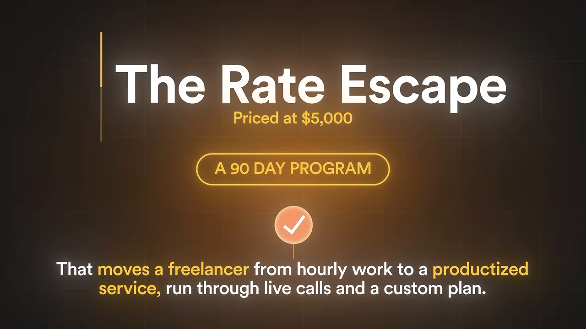
이런 하이티켓 상품에서 5,000달러가 터무니없지 않은 이유는 결과가 그 값을 치르기 때문이에요. 시간당 50달러 받던 사람이 프로젝트 하나에 5,000달러를 받게 되면 첫 고객 몇 명으로 본전이 나와요. 90일 동안의 시간이 아니라 결과의 일부에 값을 매기는 거예요.
발표자는 고가 상품에서 거의 모두가 하는 실수도 짚어요. 영상, 보너스, 모듈을 쌓아 올려 더미가 커 보이게 만드는 거예요. 아무도 '더 많은 물건'에 5,000달러를 내지 않아요. 고통스럽고 비싼 문제 하나가 사라지는 데 내요.
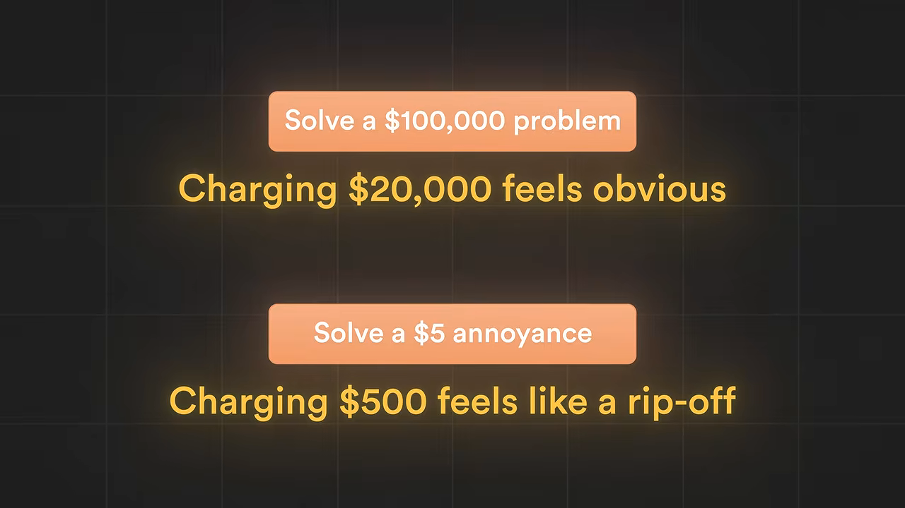
함께 해 주는 방식으로 전달해요
서른다섯 번째는 이 비싼 상품을 어떻게 전달하느냐예요. 5,000달러짜리를 팔면 모든 걸 1:1로 해야 한다고 생각하기 쉬워요. 그러면 고객 열 명쯤에서 주 80시간을 일하게 되고, 스스로 감옥을 지은 셈이 돼요. 그래서 구조를 다르게 짜요.
| 방식 | 무슨 일이 생기나요 |
|---|---|
| 전부 1:1 | 고객 몇 명에서 운영자가 지쳐 쓰러져요 |
| 전부 녹화 영상과 자동화 | 5,000달러를 내고 영상 모음을 받으면 속았다고 느껴요. 사람들은 운영자를 원했어요 |
| 함께 해 주는 방식(가운데) | 앞서 만든 템플릿과 짧은 강의가 커리큘럼이 되고, 그룹 통화·직접 질문·맞춤 계획을 얹어요 |
시스템이 가르치고, 직접 만나는 시간이 변화를 만들어요. 그래야 비싸게 받으면서도 내 삶을 지킬 수 있다고 해요. 그리고 앞에서 만든 작은 상품들은 이 고가 상품과 경쟁하지 않고 그 밑바닥이 돼요. 여섯 묶음은 따로 노는 게 아니라 처음부터 하나의 사다리였다는 게 발표자의 정리예요.
그래서, 하나만 고르세요
발표자는 35개를 다 만들다 지치지 말라고 해요. 10개도 아니고 하나예요. 영상을 보다가 '어, 이건 나도 하겠는데' 싶었던 바로 그 하나만 끝까지 만들라는 거예요.
The people who win at this aren't the ones with the most ideas, they're the ones who actually finish the first one.
이기는 사람은 아이디어가 가장 많은 사람이 아니라, 첫 번째를 실제로 끝낸 사람이에요.
— 영상 24:08